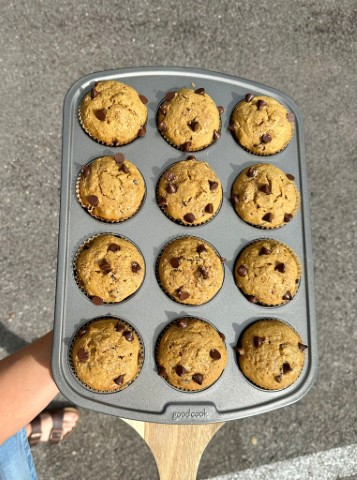

Walnut Chocolate Chip Pumpkin Muffins
I roasted my Halloween decorations (yes, pumpkins) and I couldn’t figure
out what to make until I found these Simply Pumpkin Muffins by Sally’s
Baking Recipes. I was surprised by how well they turned out, so I’ll
write down the recipe here (plus my tweaks). You’ll get 14-16
regular-sized muffins.

Ingredients
- 1/2 cup vegetable oil or melted coconut oil
- 1/2 cup granulated sugar
- 1/3 cup light brown sugar
- 2 eggs
- 1 1/2 cups fresh pumpkin puree
- 1/4 cup milk (any type)
- 1 3/4 cups all-purpose flour
- 1 teaspoon baking soda
- 1 1/2 teaspoons ground cinnamon
- 1 1/2 teaspoons pumpkin pie spice
- 1/4 teaspoon ground ginger or nutmeg
- 1/2 teaspoon salt
- 1/2 cup chopped walnuts (plus extra for topping)
- 1/2 cup dark chocolate chips (plus extra for topping)
Instructions
-
Preheat the oven to 425°F (220°C). Line a muffin pan with paper liners
or grease well.
-
In a large bowl, whisk together the oil, granulated sugar, brown
sugar, pumpkin puree, eggs, and milk.
-
Add the dry ingredients (flour, baking soda, cinnamon, pumpkin pie
spice, ginger, and salt) and combine until just mixed.
- Gently fold in the chopped walnuts and dark chocolate chips.
-
Spoon the batter into muffin cups, filling each to about 90-95% full.
Sprinkle extra brown sugar, chocolate chips, and walnuts on top for
decoration.
-
Bake for 5 minutes at 425°F, then reduce the temperature to 350°F
(175°C) and bake for an additional 17 minutes, or until a toothpick
inserted into the center comes out clean.